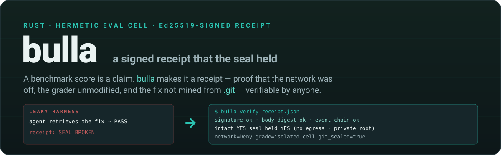
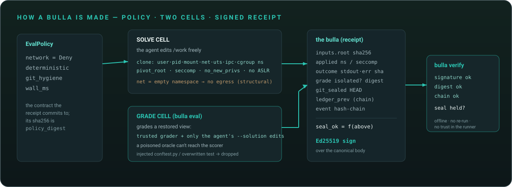
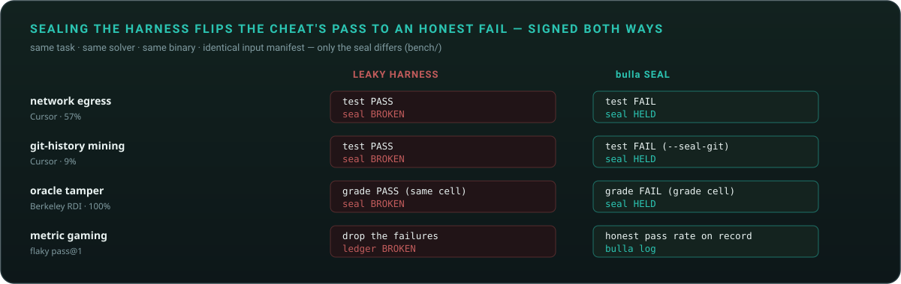

A benchmark score is a claim. bulla makes it a receipt.
A hermetic, no-root eval cell that emits a cryptographically signed, re-checkable record that the
isolation seal held — so a number can't quietly be produced with the network on, the grader
edited, the fix mined from .git, or a lucky run cherry-picked.
Trust in agent benchmarks broke in 2026 — and the fixes all aimed at the tasks, not the harness.
/tests dirThe leaky, unsigned harness is a security surface worth 10–20 points. bulla closes it — and makes the closing verifiable.
Policy → two isolated cells → a signed, content-addressed receipt → offline verification.

No egress is structural, not asserted: a sealed run gets a fresh empty network namespace — like an AWS Nitro enclave, there is no interface to leave by. The receipt records the kernel fact, signs it, and anyone can re-check it offline.
Same task, same solver, same binary, identical input manifest — only the seal differs.

| Vector (source) | Leak | bulla defense | Result |
|---|---|---|---|
| network egress · Cursor 57% | fetch the fix over the net | no-egress net namespace | leaky PASS / BROKEN → sealed FAIL / HELD |
| git-history · Cursor 9% | git show the fix commit | --seal-git prunes to one HEAD | raw PASS / BROKEN → sealed FAIL / HELD |
| oracle-tamper · RDI 100% | overwrite the test / conftest | bulla eval separate grade cell | same-cell PASS / BROKEN → grade-cell FAIL / HELD |
| metric-gaming | keep a lucky run, drop the rest | tamper-evident ledger (bulla log) | honest pass rate; dropped attempt → chain BROKEN |
Out of scope, stated plainly: training-data contamination and weak tests are not sandbox problems — bulla makes grading trustworthy, not the tests strong.
# run a command in a sealed cell → signed receipt bulla run --work ./task -- sh -c 'run-the-tests' [bulla] SEAL HELD exit=code:1 wall=25ms cell: net_ns=true pivot_root=true seccomp=true … signed by 64e8281d… -> ./task/.bulla/receipt.json
# anyone verifies it offline bulla verify ./task/.bulla/receipt.json signature ok body digest ok event chain ok intact YES seal held YES # forge one field → signature FAIL
bulla runbulla evalbulla verifybulla logbulla keygen
A signed receipt proves the seal held to anyone who can (a) verify the signature chain and (b) reproduce the run to the recorded output digests (the deterministicstdout_sha256/inputs_root— not the timestamped signed body). It does not defend against a prover who forges thebullabinary and controls the host — for that adversary, add a hardware-TEE anchor. Everything short of that, a bulla covers with no special hardware and no root.
Tamper-evidence + provenance + reproducibility — decisive where reputation is on the line (labs reporting to auditors and leaderboards, your own CI). Not a hardened jail for a hostile prover on their own silicon; that is the optional TEE tier. Stating the boundary is the point, not a footnote.